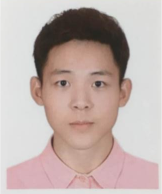

余佳宇
男 | 21岁 | 前端开发工程师 | 深圳
手机：15625568641 | 微信：JY99824 | 邮箱：1195118385@qq.com
教育经历
~ 广东科技学院 网络工程 本科
项目经历
-
Yogae UI
源码链接 项目预览项目简介：该项目是参照Ant Design, Element UI等UI库思路而自制的简易UI框架，项目基于Vue3和TypeScript, 尽量不使 用第三方库,官网支持响应式，使用SCSS为CSS预处理目前已支持Button，Dialog，switch等组件。完成该项目使我对Vue的 常见特征更加熟悉，同时提升自己对前端工程化流程以及单元测试重要性的深刻理解，近一步开源文化
技术要点： 1.理解Vue2和Vue3的区别 2.Vue3中如何支持事件属性绑定 3.了解Grid的布局的基本运用 4.父子组件之间通信 5.Vue3新版V-model的基本用法。
技术栈： Vue3.0, TypeScript, VueRouter, Vite
-
CNODE中文社区
源码链接 项目预览项目简介： 该项目参照CNODE中文社区而采用Vue2实现还原的一个中文社区平台，项目调用CNODE官方社区提供的API，包 含首页，用户文章列表，个人信息列表等页面，以Vue Cli为基础创建项目模板，使用Axios获取数据，通过Vue Router实现 路由跳转，使用watch监听路由的变化
技术要点： 1.vue.js计算属性 2.vue.js的内置指令和事件的绑定 3.vue.js的自定义事件和触发 4.vue-router路由的跳转和监听 5.父子组件之间的数据传递
技术栈： Vue2, Vue Router, jQuery
-
简一导航首页
源码链接项目简介： 一款清爽简洁的导航首页，给用户全新的使用体验。
技术要点： 理解媒体查询，兼容移动端和PC端，理解LocalStorage。
技术栈： jQuery、CSS 布局、媒体查询、localStorage、SVG Symbols、iconfont.cn、阻止冒泡、JSON 序列化
技能
- 熟悉HTML, DIV + CSS 的页面布局， 能根据设计图像素级动完成页面制作
- 熟悉HTML5及语义化，掌握CSS3动画，过渡效果动等常用技术
- 熟悉原生JavaScript，会使用ES6+常用规范，了解TypeScript
- 熟悉Vue框架功能，理解如组件，虚拟DOM，双向绑定等概念，并开发项目
- 有移动端开发经验，理解响应式等技术制作设配手机设备的页面
- 了解HTTP相关知识，了解常用的Web性能优化
- 熟练使用VsCode, WebStorm，Git等开发工具
- 激情，抗压能力强，自我驱动，追求效率与美。
开源项目
校园经历
-
- 1.曾担任校礼模司仪，参加校级元旦晚会，国庆晚会等晚会走秀表演
- 2.大一至今期间担任班干部兼组织委员，多次组织班级校内活动，锻炼了自己的组织协调能力；
- 3.大一期间志愿东莞马拉松志愿者；
- 4.大一期间参加免费午餐广东大学生驿站，参加多次公益活动，协助团队都取得了不错的效果